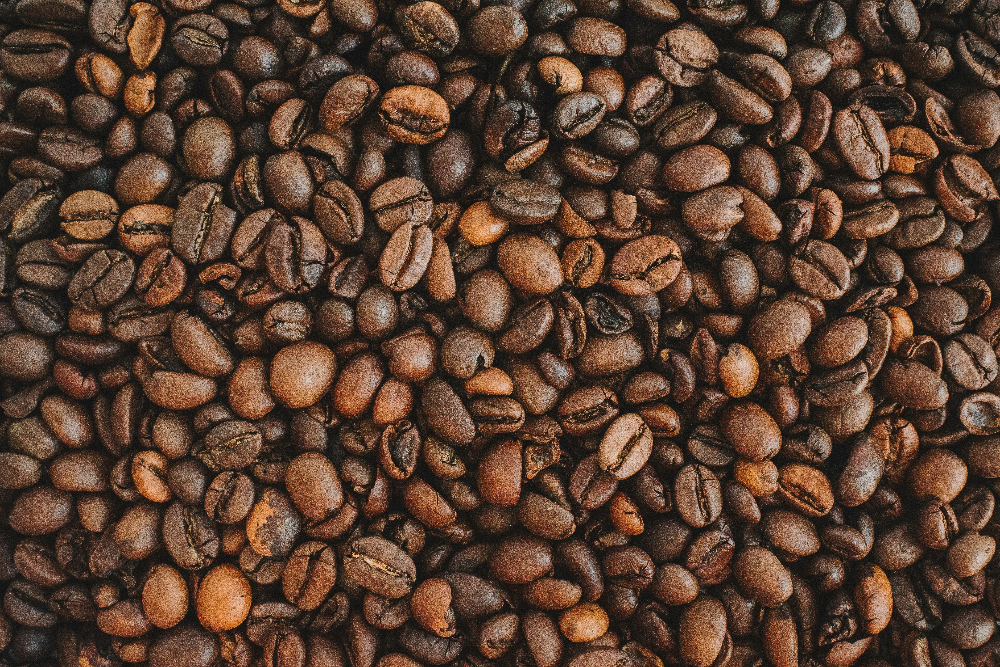

Café de origem, torrado com propósito.
A Grão Nobre trabalha direto com pequenos produtores para levar até você grãos especiais, torrados em lotes pequenos toda semana.

Quem já experimentou:
O que dizem nossos clientes?
Perguntas frequentes
Vendemos das duas formas! Se você tiver moedor, recomendamos levar em grãos para preservar o frescor por mais tempo. Se preferir moído, basta selecionar o seu método de preparo (Filtro de papel, Prensa Francesa ou Espresso) na página do produto. Nós ajustamos a espessura da moagem exata para o seu método.
O ideal é mantê-lo na nossa própria embalagem, que possui válvula desgaseificadora e fecho hermético (zipper). Guarde em um local seco, fresco e longe da luz (como dentro do armário). Evite colocar o café na geladeira, pois a umidade altera o sabor e o aroma dos grãos.
Nós trabalhamos exclusivamente com cafés 100% arábica, que possuem pontuação acima de 80 pontos (padrão SCA). Ao contrário dos tradicionais, nossos grãos são colhidos maduros, não têm impurezas e passam por uma torra artesanal média. Isso resulta em uma bebida naturalmente doce, sem o amargor queimado que exige açúcar.